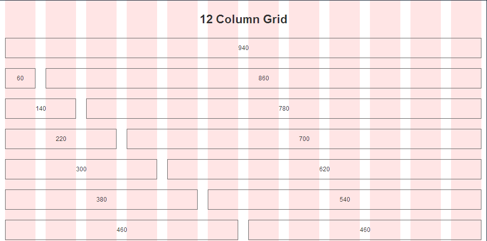

相信許多設計師或是工程師都有用過bootstrap，他是一套Css framework，裡面提供相當大量的樣式讓使用者可以撰寫較少的CSS就可以獲得不錯的效果。
而他不只有許多視覺上的樣式，他也包含了排版專用的grid system (grid system並不是bootstrap提出的，只是拿它做範例比較容易)，grid system顧名思義就是網格系統，他將畫面分隔一塊一塊，然後頁面內容再依需求大小放進這一格一格內。
這樣的構想與自適應網頁(Responsive Web Design)結合，就會出現類似bootstrap的css framework。通常網格系統會提供12或是16的column做選擇，每一個column是固定比例大小，而網頁內容選擇不同的column大小來進行網頁排版，在透過CSS3 的media query調整每個column的大小達到自適應網頁。
範例：http://getbootstrap.com/css/#grid
首先，先來看個範例。
... <div class="row"> <div class="col2">col2</div> <div class="col2">col2</div> <div class="col2">col2</div> <div class="col6">col6</div> </div> <div class="row"> <div class="col4">col4</div> <div class="col2">col2</div> <div class="col6">col6</div> </div> ...
它的結構類似上面，row代表橫向，column (col)代表垂直，每一個row裡面必須包含數字總和為12的column，如果需要換一個橫列，也就必須開一個新的row。
擁有grid system的framework相當多，運作方式也有所不同，但大致上都脫離不了這個概念。
Grid system是一個概念，CSS framework是為了讓使用者寫更少的CSS同時兼容各瀏覽器，這樣的情況下發生了html code相當長的小問題。
究竟有多長呢？大概只比table寫網頁短一點吧。